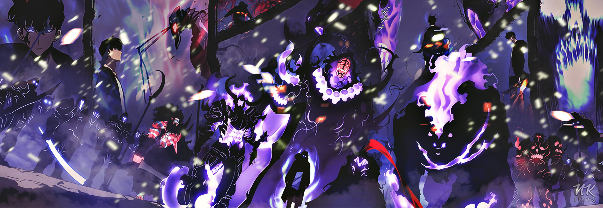

About Sung Jin-Woo
Jin-Woo is a bad-ass character! He's a hunter, a person that hunts monsters and close interdimensional gates.
Jin-Woo and his army
Jin's Characteristics
- He was the weakest hunter
- He stopped his own education to support his family
- He rose to the top and is trying to protect his family and the world
Jin's Family and Friends
Jin-Woo has some awesome friends, he has an army of undead which is really bad-ass. He also has some friends that are pretty awesome. Click in the links below to read more about them: